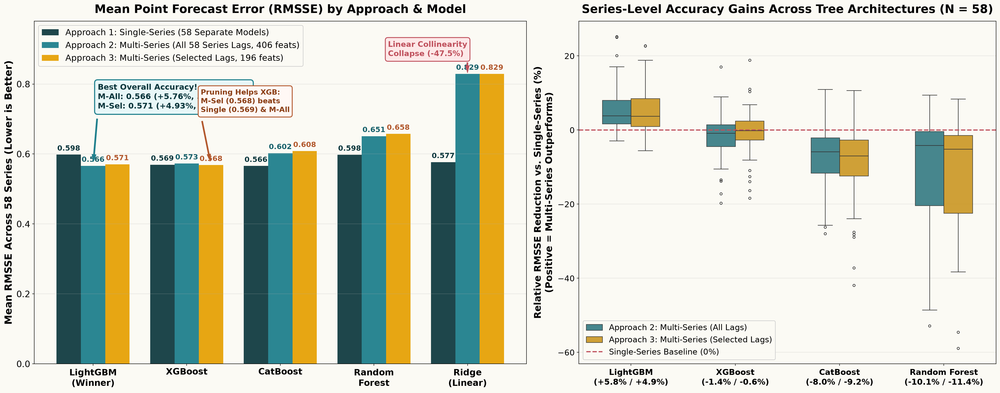
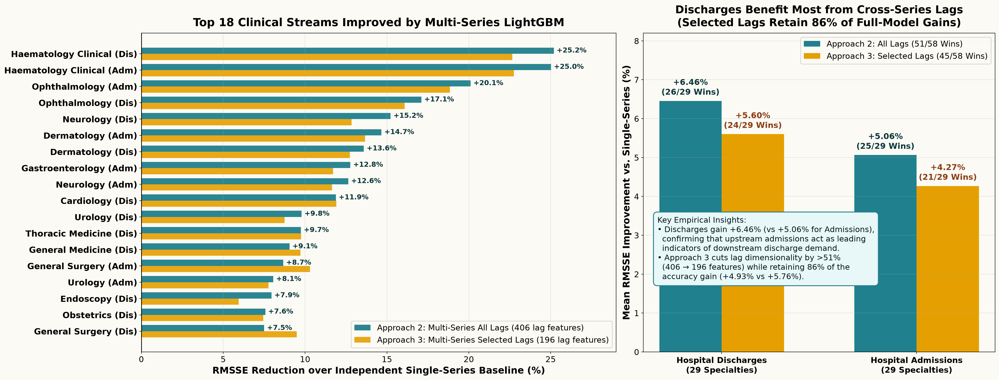
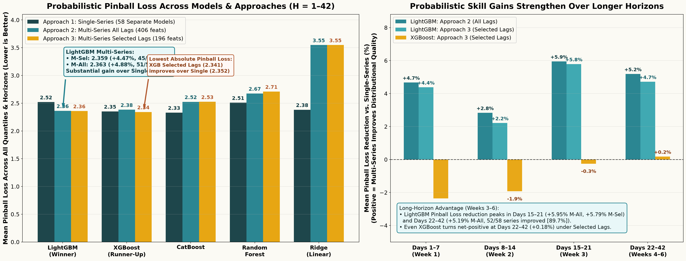
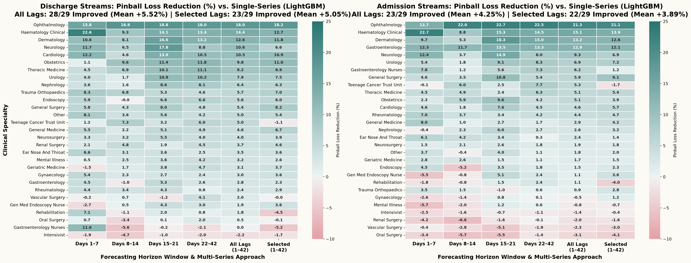
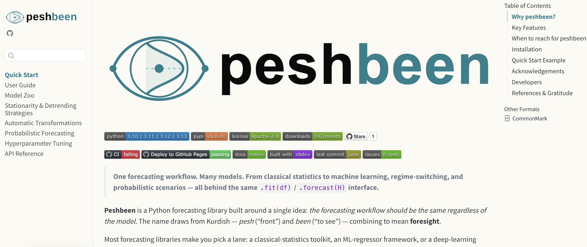

Systemic Forecasting of Hospital Patient Flow: An Interdependent Multi-Series Approach to Cross-Specialty Dynamics
6th WGSSS Postgraduate Research Conference 2026
Mustafa Aslan
Data Lab for Social Good, Cardiff Business School, Cardiff University, UK
Lead supervisor: Prof. Bahman Rostami-Tabar
Co-supervisor: Dr. Jeremy Dixon
Co-supervisor: Dr. Jeremy Dixon
2 November 2026 | Bangor University
Outline
- Problem & Motivation
- Interdependent Multi-Series Framework
- Experimental Setup & Three Forecasting Approaches
- Empirical Results: Point & Probabilistic Forecasting
- Operational Implications & Next Steps
The Clinical & Operational Problem
Siloed Hospital Operations: Fragmented decision-making across multidisciplinary wards contributes to systemic delays, prolonged stays, and delayed discharges.
Systemic “Ripple Effects”: Admission surges in one clinical specialty act as leading indicators of downstream discharge pressure and bed blocking in others.
Patient Off-Placement: When target wards reach capacity, patients are boarded in non-specialist beds—inflating length of stay and compounding hospital gridlock.
The Scale of the Challenge
Capturing hospital-wide patient flow dynamics across 58 coupled time series
29 Clinical Specialties General Medicine, Surgery, Trauma, Cardiology, Haematology, ICU, etc.
2 Flow Types Admissions & Discharges Strongly coupled daily inflows and outflows across wards
58 Series Simultaneous Time Series 5+ years of daily NHS inpatient data (\(>109,000\) panel observations)
Central Research Questions:
1. Can exploiting interdependencies across specialties in ONE unified model improve point and probabilistic forecasts over 58 independent models?
2. Can these gains be retained using a reduced-input representation (one selected flow series per specialty)?
Conventional Baseline: 58 Independent Single-Series Models
Independent Univariate Modeling (Approach 1)
- Fit 58 separate forecasting models (one per specialty and flow type).
- Maintain, tune, and monitor each series in complete isolation:
- Hyperparameter tuning repeated 58 independent times (\(58 \times 75 = 4,350\) CV evaluations per model family).
- Each model conditions exclusively on its own historical lags: \[ \hat{y}_{t+1}^{(i)} = f_i\left(y_t^{(i)}, y_{t-1}^{(i)}, \dots, y_{t-p}^{(i)}, \mathbf{Z}_t\right) \]
Why Siloed Forecasting Falls Short
Ignores Cross-Specialty Spillovers: Admissions and discharges are tightly coupled within and across specialties (\(r > 0.80\) in core medical/surgical wards). Univariate models are blind to upstream admission surges.
Data Fragmentation: Each model trains on only \(\sim 1,880\) daily observations rather than pooling shared seasonal and calendar structure across all \(109,000+\) hospital records.
Operational Maintenance Burden: Scaling and auditing 58 separate pipelines for point and probabilistic forecasting creates substantial technical debt.
➜ Proposed Solution: Jointly model all 58 streams via an Interdependent Multi-Series Framework
Outline
- Problem & Motivation
- Interdependent Multi-Series Framework
- Experimental Setup & Three Forecasting Approaches
- Empirical Results: Point & Probabilistic Forecasting
- Operational Implications & Next Steps
Proposed Framework: Three Forecasting Architectures Compared
Evaluating full cross-series information against correlation-guided input reduction
Approach 1: Single-Series Baseline
- Architecture: 58 separate models (\(f_1, \dots, f_{58}\)), tuned independently.
- Lag Inputs: Own lags \(1 \dots 7\) only (\(\mathbf{7}\) lag features per model).
- Cross-Series Info: None — ignores cross-specialty spillovers.
Approach 2: Multi-Series (All Lags)
- Architecture: 1 unified global model \(\mathcal{M}\) predicting all 58 series at once.
- Lag Inputs: Lags \(1 \dots 7\) of all 58 series (\(58 \times 7 = \mathbf{406}\) lag features).
- Cross-Series Info: Full hospital-wide inflow and outflow visibility.
Approach 3: Multi-Series (Selected Lags)
- Architecture: 1 unified global model \(\mathcal{M}\) with pruned cross-lags.
- Lag Inputs: 1 dominant series per specialty (\(28 \times 7 = \mathbf{196}\) lags; \(-51\%\) features).
- Selection Rule: Composite \(R^2\) test (\(p < 0.05, |r| \ge 0.20\)) on Adm vs. Dis.
Mathematical Formulation: Interdependent Multi-Series Model
Global Functional Mapping:
Instead of 58 disconnected functions, a single model \(\mathcal{M}\) predicts patient flow \(y_{i,t}\) for any target stream \(i \in \{1, \dots, 58\}\): \[y_{i, t} = \mathcal{M}\left( s_i, \, \mathbf{X}_{t}^{\text{cross}}, \, \mathbf{Z}_{t} \right) + \epsilon_{i, t}, \qquad i = 1, \dots, N\]Cross-Specialty Feature Representation (\(\mathbf{X}_{t}^{\text{cross}}\)):
Concatenates \(p=7\) autoregressive lags across the active set of series \(\mathcal{S}\) (\(\mathcal{S}_{\text{full}} = 58\) series in Approach 2; \(\mathcal{S}_{\text{sel}} = 28\) dominant specialty series in Approach 3): \[\mathbf{X}_{t}^{\text{cross}} = \Big[\mathbf{y}_{t-1:t-p}^{(k)}\Big]_{k \in \mathcal{S}} \in \mathbb{R}^{|\mathcal{S}| \cdot p}\]Pooled Empirical Risk Minimization:
Learned jointly across all \(N=58\) streams and training days viapeshbeen: \[\min_{\mathcal{M}} \sum_{i=1}^{N} \sum_{t=p+1}^{T} \mathcal{L}\left( y_{i, t}, \, \mathcal{M}\left(s_i, \, \mathbf{X}_{t}^{\text{cross}}, \, \mathbf{Z}_{t}\right) \right) + \Omega(\mathcal{M})\]
Notation & Model Interface (peshbeen):
- \(y_{i,t}\): Daily admissions or discharges for stream \(i\) on day \(t\)
- \(s_i\): Categorical series identifier (
id_col = "specialty") - \(\mathcal{S}_{\text{full}}\) vs. \(\mathcal{S}_{\text{sel}}\): 406 full lags vs. 196 selected lags
- \(\mathbf{Z}_t\): Calendar (
day_of_week,month), bank holidays, time trend, and capacity expansion (gm_ch) - \(\mathcal{M}(\cdot)\): Pluggable estimator in
peshbeen(ml_multi_forecaster):- LightGBM, XGBoost, CatBoost, Random Forest, Ridge
The Multi-Series Training Matrix Architecture
| Time | Series ID (id_col) |
Specialty A Lags | Specialty B Lags | Specialty C Lags | … | Exog | Target (Y) Flow |
||||||
|---|---|---|---|---|---|---|---|---|---|---|---|---|---|
| lag 3 | lag 2 | lag 1 | lag 3 | lag 2 | lag 1 | lag 3 | lag 2 | lag 1 | |||||
| t1 | Specialty A | 49 | 52 | 58 | 15 | 18 | 20 | 10 | 12 | 14 | … | exog1 | 65 |
| t2 | Specialty A | 52 | 58 | 65 | 18 | 20 | 22 | 12 | 14 | 16 | … | exog2 | 71 |
| t3 | Specialty A | 58 | 65 | 71 | 20 | 22 | 19 | 14 | 16 | 14 | … | exog3 | 68 |
| ↓ | id_col switches → |
← Cross-Lag Features (X) Repeat Identically Across Series → | Target switches ↓ | ||||||||||
| t1 | Specialty B | 49 | 52 | 58 | 15 | 18 | 20 | 10 | 12 | 14 | … | exog1 | 22 |
| t2 | Specialty B | 52 | 58 | 65 | 18 | 20 | 22 | 12 | 14 | 16 | … | exog2 | 19 |
| t3 | Specialty B | 58 | 65 | 71 | 20 | 22 | 19 | 14 | 16 | 14 | … | exog3 | 21 |
| ↓ | id_col switches → |
← Cross-Lag Features (X) Repeat Identically Across Series → | Target switches ↓ | ||||||||||
| t1 | Specialty C | 49 | 52 | 58 | 15 | 18 | 20 | 10 | 12 | 14 | … | exog1 | 16 |
| t2 | Specialty C | 52 | 58 | 65 | 18 | 20 | 22 | 12 | 14 | 16 | … | exog2 | 14 |
| t3 | Specialty C | 58 | 65 | 71 | 20 | 22 | 19 | 14 | 16 | 14 | … | exog3 | 15 |
| ⋮ | ⋮ (all 58 streams) | ⋮ (cross-lags repeated identically per date across streams) | ⋮ | ||||||||||
Recursive Multi-Step & Probabilistic Forecasting (\(H = 42\) Days)
Propagating cross-specialty feedback loops and joint predictive uncertainty
1. Step \(h = 1\) (Observed History)
- Model ingests observed cross-series lags up to origin \(t\): \[\mathbf{X}_{t} = \left[\mathbf{y}_{t:t-6}^{(k)},\, \mathbf{Z}_{t+1}\right]_{k \in \mathcal{S}}\]
- Generates 1-step ahead predictions \(\hat{\mathbf{y}}_{t+1} = \mathcal{M}(\mathbf{X}_t)\) for all 58 series simultaneously.
2. Steps \(h = 2 \dots 42\) (Recursive Roll)
- Predicted flows \(\hat{\mathbf{y}}_{t+h-1}\) roll into the lag vector for step \(h\): \[\text{Lag}_1 \leftarrow \hat{\mathbf{y}}_{t+h-1}, \quad \text{Lag}_2 \leftarrow \hat{\mathbf{y}}_{t+h-2}\]
- Admission surges predicted on day \(t+1\) dynamically feed into downstream specialty discharge forecasts over the 6-week horizon.
3. Joint Probabilistic Scenarios
- Via
multi_prob_forecastsinpeshbeen, empirical residual covariance is estimated across horizons. - Generates 10,000 Monte Carlo sample paths (
method="mvn") per fold, yielding full predictive distributions for every specialty and horizon \(h \in \{1, \dots, 42\}\).
Outline
- Problem & Motivation
- Interdependent Multi-Series Framework
- Experimental Setup & Three Forecasting Approaches
- Empirical Results: Point & Probabilistic Forecasting
- Operational Implications & Next Steps
Experimental Design & Evaluation Protocol
NHS Inpatient Dataset & Cross-Validation Design
- Dataset: Daily NHS inpatient admissions and discharges (Jan 2021 – Feb 2026; 29 specialties \(\times\) 2 flows \(= \mathbf{58}\) series).
- Exogenous Covariates: Day of week, month, bank holidays, linear time index, General Medicine capacity step-change (
gm_ch), plus Fourier terms & interactions for linear models. - Rolling-Origin Evaluation (
SplitTimeSeries):- 30 rolling evaluation windows, forecast horizon \(H = 42\) days (6 weeks), step size \(= 12\) days.
- Hyperparameter tuning via Optuna on the training partition (80 trials for multi-series ML; 75 trials per series for single-series).
Five Model Families & Two Evaluation Metrics
- Five Diverse Learning Algorithms Evaluated Across All 3 Approaches:
- LightGBM (
lgb): Leaf-wise histogram GBDT with native categorical handling & \(L_1/L_2\) regularisation. - XGBoost (
xgb): Depth/leaf-regularised histogram gradient boosting. - CatBoost (
cat): Oblivious trees (symmetric splits across all nodes at a given depth). - Random Forest (
rf): Bagged decision tree ensemble (no sequential residual boosting). - Ridge Regression (
ridge): Linear \(L_2\)-penalised model with one-hot series & interaction encoding.
- LightGBM (
- Metrics: RMSSE (Point Forecasting) and Pinball Loss across predictive quantiles (Probabilistic Forecasting).
Forecast Evaluation Metrics
Scale-independent point accuracy (RMSSE) and distributional accuracy across quantiles (Pinball Loss)
Point Forecasting: Root Mean Squared Scaled Error (RMSSE)
\[\text{RMSSE} = \sqrt{\frac{\frac{1}{H}\sum_{h=1}^{H}\left(y_{t+h} - \hat{y}_{t+h}\right)^2}{\frac{1}{T-1}\sum_{t=2}^{T}\left(y_t - y_{t-1}\right)^2}}\]
- Scale-Independent Comparison: Normalises forecast errors by the in-sample one-step naïve random walk, allowing fair aggregation across high-volume (General Medicine) and low-volume specialties.
- Relative Gain (%): \(\frac{\text{RMSSE}_{\text{Single}} - \text{RMSSE}_{\text{Multi}}}{\text{RMSSE}_{\text{Single}}} \times 100\).
Probabilistic Forecasting: Integrated Pinball Loss
\[L_\tau(y, \hat{q}_\tau) = \max\left(\tau(y - \hat{q}_\tau), \, (\tau - 1)(y - \hat{q}_\tau)\right)\] \[\overline{\text{PL}}(F, y) = 2 \int_0^1 L_\tau\left(y, F^{-1}(\tau)\right) d\tau\]
- Full Distributional Evaluation: Assesses calibration and sharpness across all predictive quantiles \(\tau \in (0, 1)\) from 10,000 Monte Carlo trajectories across horizons \(h = 1 \dots 42\).
- Lower Pinball Loss = Superior Probabilistic Quality (Skill gain \(>0\%\) indicates reduction in Pinball Loss over Single-Series).
Outline
- Problem & Motivation
- Interdependent Multi-Series Framework
- Experimental Setup & Three Forecasting Approaches
- Empirical Results: Point & Probabilistic Forecasting
- Operational Implications & Next Steps
Point Forecasting Results: Comparing the Three Approaches Across Models
Why Does LightGBM Excel While Other Models Struggle?
Model architecture interaction with high-dimensional cross-series lags
LightGBM: Multi-Series Winner
- Lowest Overall Error: 0.566 (All Lags) & 0.571 (Selected Lags), beating all single-series models.
- Native Categorical Splits: Optimal partitioning on
specialtyisolates series-specific regimes. - Sparse \(L_1\) Regularisation: Filters noisy cross-lags while retaining true admission signals.
XGBoost, CatBoost & Random Forest
- Input Pruning Helps XGBoost: Selected Lags (0.568) beats Single-Series (0.569) & improves 14/29 discharge series.
- CatBoost (Oblivious Trees): Symmetric depth-wide splits restrict specialty-specific conditioning.
- Random Forest (Bagging): Lacks sequential boosting to correct series-level biases.
Ridge: Linearity Limitation
- Strong Per-Series Fit (0.577): Competitive when fitted separately with 7 own lags.
- Global Collapse (0.829, \(-47.5\%\)): Forces identical cross-lag slopes across all 58 streams.
- Key Takeaway: Cross-specialty spillovers are non-linear and specialty-contingent.
Specialty-Level Point Forecast Gains: Admissions vs. Discharges
Full-input (Approach 2) vs. Reduced-input (Approach 3) LightGBM across clinical streams

Probabilistic Forecasting Results: Pinball Loss Across Models & Horizons

System-Wide Probabilistic Improvements Across All 58 Clinical Series

Synthesis: Comparing the Three Forecasting Approaches
| Dimension | Approach 1: Single-Series | Approach 2: Multi-Series (All Lags) | Approach 3: Multi-Series (Selected Lags) | Key Takeaway |
|---|---|---|---|---|
| Model Count | 58 separate models | 1 unified model | 1 unified model | 98% fewer models to maintain |
| Lag Features | \(7\) own lags / model | \(58 \times 7 = \mathbf{406}\) lags | \(28 \times 7 = \mathbf{196}\) lags | \(-51\%\) features in Approach 3 |
| Point Accuracy (LGB RMSSE) | \(0.598\) (Baseline) | \(0.566\) (\(+5.8\%\), \(51/58\) wins) | \(0.571\) (\(+4.9\%\), \(45/58\) wins) | Retains 86% of full-model gain |
| Discharges vs. Admissions | Baseline (\(0\%\)) | Dis: \(+6.5\%\) (\(26/29\)) | Adm: \(+5.1\%\) | Dis: \(+5.6\%\) (\(24/29\)) | Adm: \(+4.3\%\) | Discharges gain most from cross-lags |
| Probabilistic (LGB Pinball) | \(2.520\) (Baseline) | \(2.363\) (\(+4.9\%\), \(51/58\) wins) | \(2.359\) (\(+4.5\%\), \(45/58\) wins) | Best LGB Pinball via Selected Lags |
| XGBoost Performance | \(0.569\) RMSSE / \(2.352\) PL | \(0.573\) RMSSE / \(2.383\) PL | \(0.568\) RMSSE / \(2.341\) PL | Lag pruning unlocks XGBoost gains |
Outline
- Problem & Motivation
- Interdependent Multi-Series Framework
- Experimental Setup & Three Forecasting Approaches
- Empirical Results: Point & Probabilistic Forecasting
- Operational Implications & Next Steps
Practical Implications, Limitations & Next Steps
Implications for Healthcare Operations
- Proactive Discharge Planning: Cross-specialty admission signals improve discharge forecasts in 26/29 (point) and 28/29 (probabilistic) specialties, peaking in Weeks 3–6 (+5.95%).
- Parsimonious Deployment (Approach 3): Selecting 1 flow series per specialty cuts lag features in half (\(406 \rightarrow 196\)) while retaining ~86–91% of accuracy gains.
- Streamlined MLOps: Replaces 58 isolated models with 1 unified
peshbeenpipeline.
Methodological Caveats & Next Steps
- Estimator Sensitivity: Multi-series gains require learners with conditional tree splits and \(L_1\) regularisation (LightGBM); linear (Ridge) and symmetric (CatBoost) models degrade under high lag dimensionality.
- From Forecasts to Bed Allocation Decisions:
- Integrate joint probabilistic trajectories into stochastic ward reservation and bed allocation optimisation to reduce patient off-placement.
Reproducible Implementation: peshbeen
- Unified Forecasting Interface: Open-source Python package developed to evaluate univariate (
ml_forecaster) and interdependent multi-series (ml_multi_forecaster,multi_prob_forecasts) workflows across any scikit-learn compatible estimator.
